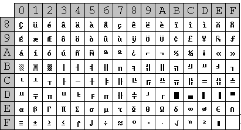
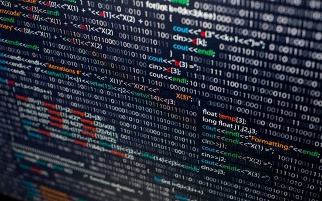
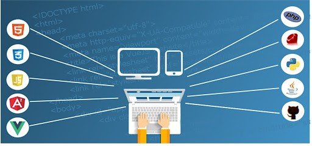
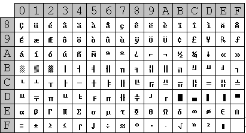
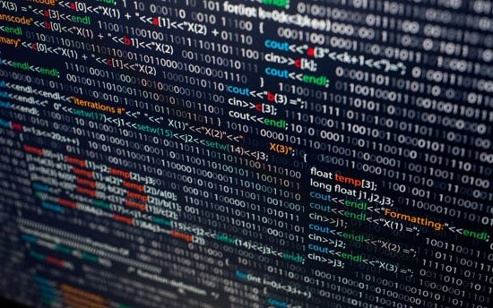
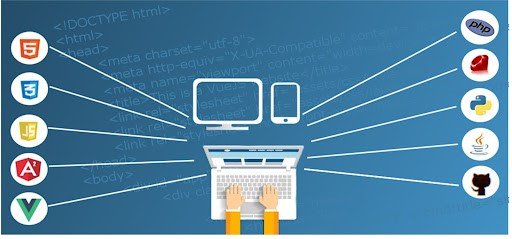

TERMINOLOGIA EN ESPAÑOL Y INGLES
Terminos español/ ingles
ESPAÑOL
INGLES
IMAGENES
CARACTER
CHARACTER
Un carácter es una unidad de información corresponde
aproximadamente con un grafema o con una unidad
o símbolo parecido, como los de un alfabeto o silabario.
A character is a unit of information that corresponds
approximately to a grapheme or a similar unit or symbol,
such as those of an alphabet or syllabary.

BYTE
BYTE
Es una unidad de información estándar utilizada en informática
y en telecomunicaciones. Equivale a 8 bits.
It is a standard information unit used in computing and
telecommunications. Equals 8 bits.
BYT
BYT
Es una subdivision de información de 8 bits.Un bit es un dígito
del sistema de numeración binario, de representa con dos valores,
el 0 y el 1 en informática.
It is a 8-bit subdivision of information.A bit is a digit of the binary
number system, which is represented by two values, 0 and 1. In computing

KILOBYTE
KILOBYTE
Es una unidad debialta de 1024 bits.Es una unidad de almacenamiento de
información cuyo símbolo es el KB y equivale a 10 mil bytes.
It is a 1024-bit unit of information.A kilobyte is a unit of information
storage whose symbol is the KB and is equivalent to 10 thousand bytes.
PROGRAMAS
PROGRAMS
Es una secuencia de instrucciones u órdenes basados en un lenguaje de
programación que una computadora interpreta para resolver un problema
Is a sequence of instructions or commands based on a programming language
that a computer interprets to solve a problem.

SOFTWARE
SOFTWARE
Estos hacen posible la ejecución de tareas específicas dentro de un computador.
These are computer programs that make it possible to execute specific tasks within a computer.
WEB
WEB
Es un Sistema que funciona a través de internet, por la cual se pueden transmitir diversos tipos de datos.
It is a system that works through the internet, through which various types of data can be transmitted.

| Terminos español/ ingles | ESPAÑOL | INGLES | IMAGENES |
| CARACTER CHARACTER | Un carácter es una unidad de información corresponde aproximadamente con un grafema o con una unidad o símbolo parecido, como los de un alfabeto o silabario. | A character is a unit of information that corresponds approximately to a grapheme or a similar unit or symbol, such as those of an alphabet or syllabary. |  | BYTE BYTE | Es una unidad de información estándar utilizada en informática y en telecomunicaciones. Equivale a 8 bits. | It is a standard information unit used in computing and telecommunications. Equals 8 bits. | BYT BYT | Es una subdivision de información de 8 bits.Un bit es un dígito del sistema de numeración binario, de representa con dos valores, el 0 y el 1 en informática. | It is a 8-bit subdivision of information.A bit is a digit of the binary number system, which is represented by two values, 0 and 1. In computing | |
KILOBYTE KILOBYTE | Es una unidad debialta de 1024 bits.Es una unidad de almacenamiento de información cuyo símbolo es el KB y equivale a 10 mil bytes. | It is a 1024-bit unit of information.A kilobyte is a unit of information storage whose symbol is the KB and is equivalent to 10 thousand bytes. | PROGRAMAS PROGRAMS | Es una secuencia de instrucciones u órdenes basados en un lenguaje de programación que una computadora interpreta para resolver un problema | Is a sequence of instructions or commands based on a programming language that a computer interprets to solve a problem. |  | SOFTWARE SOFTWARE | Estos hacen posible la ejecución de tareas específicas dentro de un computador. | These are computer programs that make it possible to execute specific tasks within a computer. | WEB WEB | Es un Sistema que funciona a través de internet, por la cual se pueden transmitir diversos tipos de datos. | It is a system that works through the internet, through which various types of data can be transmitted. |  |